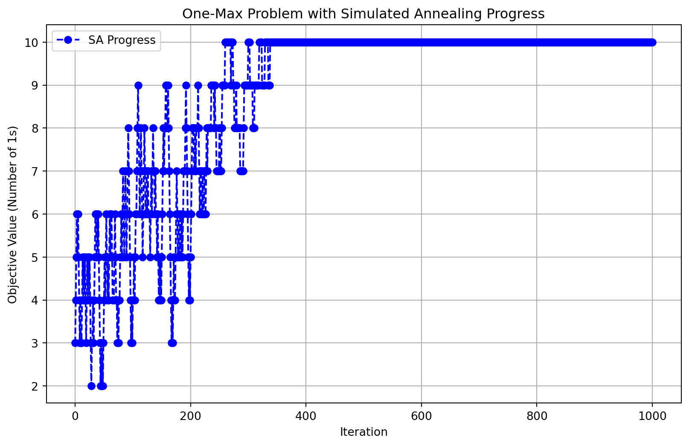
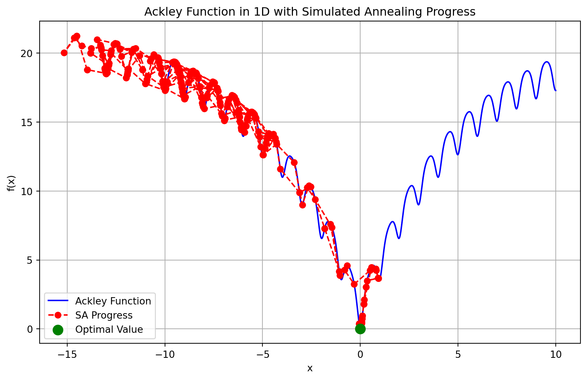

##Simulated Annealing One-Max Example
import numpy as np
import random
import matplotlib.pyplot as plt
import time
# Define the necessary global variables
num_bits = 10
max_evals = 1000
initial_temp = 10
cooling_rate = 0.99
min_temp = 0.0001Simulated Annealing
What is a Metaheuristic Algorithm?
- One of the main attributes of a metaheuristic algorithm is that it performs a certain set of operators for a certain number of iterations to search for the optimal solution with great shrewdness.
- Compared to the Exhaustive Search (ES) and hill climbing (HC) algorithms, a metaheuristic algorithm will neither check all the candidate solutions of a complex optimization problem like ES nor fall into a local optimum at early iterations as easily as HC.
History of Metaheuristics
- Although the term “metaheuristic” was introduced in the 1980s, several metaheuristic algorithms were actually presented in the 1960s or even earlier.
- The year 1990 can be regarded as the first watershed in the development of metaheuristic algorithms. However, the available computing power may not satisfy the requirements of some complicated metaheuristic algorithms.
- Since the late 1990s, the number of metaheuristic algorithms has exploded. More and more studies use “the number of evaluations” to replace “the number of iterations” for evaluating the performance of a metaheuristic algorithm because each search can be regarded as an investment of computation resource.
- Using the number of evaluations provides a way that is more precise than using the number of iterations to evaluate the effect (improvement or outcome) of adding an additional unit of computation resource for the search
- From the year 2010 or even earlier, some groups have attempted to apply metaheuristic algorithms in high-performance computing environments.
- Using distributed or parallel computing systems to accelerate the response time of metaheuristic algorithms is an intuitive approach adopted in some early studies.
- Some of the parallel metaheuristics are not only able to provide the end results to the user more quickly; they also can find better results than metaheuristic algorithms on a single machine because the parallel computing mechanism leads them to increase the search diversity during the convergence process.
- When we look at these distributed and parallel computing environments, the cloud computing platform (e.g., Hadoop, Spark, Microsoft Azure, Amazon EC2, or Google Compute Engine) can now provide an easy way to use a distributed computing system to further reduce the response time of metaheuristics.
A Unified Framework for Metaheuristic Algorithms (UFM)
- The appearance of metaheuristic algorithms has come with methods to classify them. These classification methods include:
- nature-inspired vs. non-nature inspired,
- dynamic vs. static objective function,
- one vs. various neighborhood structures,
- memory usage vs. memoryless methods,
- with vs. without local search method, and
- population-based vs. single-solution-based search.
UFM 5 Main Operators
- Initialization (I): The initialization operator normally plays the roles of reading the input file (e.g., dataset), initializing all the parameters of a metaheuristic algorithm, and determining the initial solutions, which is normally based on a random process.
- Transition (T): The transition operator usually plays the role of varying the search directions, such as perturbing a portion of the subsolutions of the current solution to generate a new candidate solution or generating a set of new candidate solutions each based on two or more of the current solutions.
- Evaluation (E): The evaluation operator is responsible for measuring the quality of solutions, such as calculating the objective value of each solution to be used by the determination operator to distinguish the quality of all the solutions. An intuitive way is to use an objective function to measure the quality of a solution for the problem in question. However, some metaheuristics do not use the “objective value” directly to measure their solutions; rather, the objective value of a solution has to undergo some sort of transformation to obtain the so-called “fitness value.”
- Determination (D): The determination operator plays the role of deciding the search directions by using information the evaluation operator provides during the convergence process. The performance of a metaheuristic algorithm depends to a large extent on the performance of this operator. A “good” search strategy for this operator will make it possible for the metaheuristic algorithm to find a better solution faster or to avoid falling into a local optimum at early iterations.
- Output (O): In spite of the fact that this operator seems to be trivial, the reality is that it can be either simple or complex depending on how much information we want to display for the metaheuristic algorithm. It can be as simple as displaying only the final result of the metaheuristic algorithm, or it can be as complex as displaying the trajectory of convergence of the metaheuristic algorithm to better understand the performance of a metaheuristic algorithm.
UFM
- In this framework, I denotes the input dataset, s denotes the current solution, \(\nu\) denotes the candidate solution, \(f_s\) denotes the objective value of \(s\), and \(f_\nu\) denotes the objective value of \(\nu\). Also, \(s\) and \(\nu\) can denote either a single solution or a set of solutions, where each solution has \(n\) elements or is an \(n-tuple\).
Comparison between exhaustive search, greedy, and metaheuristic algorithms
Simulated Annealing (SA)
If life is like simulated annealing, what’s the most memorable ‘temperature drop’ moment where you had to settle down and stick to one choice?
A single-solution-based algorithm
A probabilistic optimization algorithm inspired by the annealing process in metallurgy, where materials are heated and then slowly cooled to reduce defects, thereby optimizing their structural properties.
In optimization, SA is used to find a good approximation to the global minimum or maximum of a function in a large search space, particularly when the search space is discrete or contains multiple local minima.
The search strategy of SA is to start with a random possible solution in the solution space and then use the Metropolis acceptance criterion to determine whether a worse solution is to be accepted or not.
To emulate the annealing process for a minimization optimization problem, SA will first calculate the difference between the objective values of the new candidate solution \(\nu\) and the current solution \(s\) to see whether it will accept the new candidate solution or not, as follows: \(\Delta_f^{\text{min}} = f(\nu) - f(s)\)
Key Components
- Solution Space:
- This is the space of all possible solutions to the problem.
- Objective Function:
- Defines the quality and overall goal of a solution.
- Temperature:
- This controls the probability of accepting worse solutions.
- Initially, the temperature is high, allowing the algorithm to explore the solution space more freely.
- As the temperature lowers, the algorithm becomes more conservative, accepting only smaller degradations in the objective.
- Cooling Schedule:
- This is a function that dictates how the temperature decreases over time (iterations).
- Typically, it follows a geometric decay, where the temperature decreases by a factor on each iteration (e.g., \(T = T_0 * \alpha^k\), where \(T_0\) is the initial temperature, alpha is a constant, and \(k\) is the iteration number).
Defining SA
- An iterative algorithm that explores the solution space of an optimization problem by considering not only improvements to the current solution but also occasional, controlled acceptance of worse solutions. This allows the algorithm to escape local minima and explore a broader range of the search space in search of a global minimum.
- The function \(f(x)\) that the algorithm seeks to minimize (or maximize)
- The configuration or state is a point \(x\) in the solution space, representing a possible solution to the problem.
- The neighboring states are the set of solutions that are reachable from the current state through small modifications.
- A control parameter temperature \(T\)) that regulates the likelihood of accepting worse solutions. It starts high and gradually decreases as the algorithm progresses.
- As \(T\) decreases, the probability of accepting worse solutions decreases, making the search more focused on local improvements.
- A cooling schedule includes a function that controls the decrease of the temperature T over time
Usefulness of SA
- The basic idea of SA is to occasionally accept non-improving solutions, which means that SA will not always move to a better solution.
- Simulated Annealing is widely used in various fields, such as:
- Combinatorial Optimization: Problems like the Traveling Salesman Problem (TSP), scheduling, and circuit design.
- Machine Learning: Hyperparameter optimization, clustering.
- Engineering: Structural design, control systems.
- Practical Applications: real-world problems where SA shines: vehicle routing, job scheduling, or portfolio optimization.
Tuning Parameters
- The success of SA heavily depends on the tuning of parameters like the cooling schedule, the initial temperature, and the size of the neighborhood.
- In the context of tuning parameters for Simulated Annealing (SA), the exploration-exploitation trade-off means adjusting the algorithm’s behavior to balance between searching broadly (exploration) and refining promising solutions (exploitation).
The Search Strategy of SA
- The search strategy of SA is to start with a random possible solution in the solution space and then use a criteria (like the metropolis acceptance criterion) to determine whether a worse solution is to be accepted or not.
- In this example, \(t^{\Delta} \quad\) and \(\quad t^{\nabla}\) indicate that the solution at the \(t+1^{\text{th}}\) iteration is either better or not better than the solution at the \(t^{\text{th}}\) iteration, respectively.
- This example shows that if the starting point is ùë•_9 and SA accepts only a new candidate solution that is better than the current solution, i.e., it has no escape mechanism, the search will get stuck at one of the two local optima (\(x_8\) and \(x_10\)) denoted \(L_1\) and \(L_2\).
- The temperature parameter in SA allows escape from local optima. If the search starts at \(x_9\), SA can potentially move to worse solutions with a certain probability based on temperature and a random probability check. At higher temperatures, SA has a higher chance of escaping local optima (\(L_1\)) (\(x_8\)) and (\(L_2\)) (\(x_{10}\)), but as the temperature decreases, it becomes less likely to accept worse moves, leading to convergence.
SA Algorithm
- Initialization:
- Choose an initial solution \(s\) and an initial temperature \(T_0\).
- Iteration:
- For each step, generate a neighboring solution \(v\) of the current solution \(s\).
- Compute the change in the objective function.
- Decide whether to move to the new solution \(v\) based on the acceptance probability.
- Gradually reduce the temperature \(T\) according to the cooling schedule
- Termination:
- The algorithm stops when the temperature \(T\) is sufficiently low or after a predefined number of iterations.
- The best solution found during the process is returned.
Many Versions of SA Exist
- This framework is a little bit different from the model above because there are two loops (outer and inner loops). This implies that a certain number of new candidate solutions will be generated and evaluated before the temperature is updated.
Advantages and Disadvantages of SA
Advantages
- Global Search Capability: Unlike simple greedy algorithms, simulated annealing can escape local minima and potentially find a global minimum.
- Flexibility: It can be applied to a wide range of optimization problems, including those with complex, multimodal landscapes.
- Simplicity: The algorithm is relatively easy to implement and does not require gradient information, making it suitable for non-differentiable problems.
Disadvantages
- Computational Cost: The method can be slow, particularly for large problem spaces, as it requires many iterations to reach a good solution.
- Parameter Sensitivity: The performance of simulated annealing depends heavily on the choice of the cooling schedule, initial temperature, and other parameters.
- No Guarantee of Optimality: The algorithm does not guarantee finding the global optimum but rather a good approximation.
SA Algorithm
To emulate the annealing process for a minimization optimization problem, SA will first calculate the difference between the objective values of the new candidate solution v and the current solution s to see whether it will accept the new candidate solution or not. \[\Delta_f^{\text{min}} = f(\nu) - f(s)\]
In case the difference between the objective values is less than \(0\), SA will accept the new candidate solution as the current solution, which means that \(\nu\) replaces; otherwise, SA will calculate a probability to decide whether or not to accept a non-improving candidate solution.
\(p_a^{\text{min}} = \exp \left( \frac{-(f(v) - f(s))}{\Psi_t} \right) = \exp \left( \frac{f(s) - f(v)}{\Psi_t} \right),\) where where \(f(x)\) denotes the evaluation function, s denotes the current solution, \(\nu\) denotes the new solution, and \(\Psi_t\) denotes the temperature at the \(t\)-th iteration.
To apply SA to a maximization optimization problem, all we have to do is to negate the difference with the following: \[\Delta_f^{\text{max}} -\Delta_f^{\text{min}} = -f(v) - -f(s) = f(s)-f(v)\]
Such a modification makes it possible to check \(\Delta_f^{\text{max}}\) in a similar way; that is,\(\Delta_f^{\text{max}}<0\), SA will accept the new candidate solution as the current solution; otherwise, SA will again calculate a probability to decide whether or not to accept a non-improving candidate solution for the following: \[p_a^{\text{max}} = \exp \left( \frac{-(f(s) - f(v))}{\Psi_t} \right) = \exp \left( \frac{f(v) - f(s)}{\Psi_t} \right)\].
Examples of How Value Can Change
* Minimization: + If \(\Delta_f^{\text{min}}\) is negative, we always accept (better solution). + If \(\Delta_f^{\text{min}}\) is positive, accept with probability \(paminp_a^{\text{min}}pamin\).
- Maximization:
- If \(\Delta_f^{\text{max}}\) is positive, we always accept (better solution).
- If \(\Delta_f^{\text{max}}\) is negative, accept with probability \(pamaxp_a^{\text{max}}\).
- In this case, \(p_a^{\text{max}}\)=.329 and 0.007 for \({\Psi_t}\) = .9 and 0.2, respectively. This indicates that a lower temperature Image implies a smaller probability Image to accept a non-improving candidate solution as the current solution.
- The value of \(f_s\) goes from 2.0 to 1.1, the value of \(p_a^{\text{max}}\) goes from 0.329 up to 0.895. This means that in case \(f(\nu)\) is worse than \(f(s)\), a smaller \(\Delta_f^{\text{max}}\) implies a higher probability \(p_a^{\text{max}}\) to accept a non-improving candidate solution as the current solution.
- Higher temperatures} (\(\Psi_t = 0.9\)) allow higher acceptance of worse solutions.
- Example: For \(\Delta_f^{\min} = -1.0\), at \(\Psi_t = 0.9\), \(p_a^{\min} = 3.038\)(high).
- Lower temperatures \(\Psi_t = 0.2\) reject worse solutions more aggressively.
- Example: For \(\Delta_f^{\min} = -1.0\), at \(\Psi_t = 0.2\), \(p_a^{\min} = 148.413\), which results in almost no acceptance.
- Acceptance of better solutions} \(p_a^{\max}\) is much higher in general but varies based on temperature.
- For \(\Psi_t = 0.9\), \(p_a^{\max} = 0.329\) (highlighted in yellow).
- For \(\Psi_t = 0.2\), \(p_a^{\max} = 0.007\), meaning lower temperatures almost never accept bad moves.
Summary of Cases
- The new solution v is better than the current solution s.
- SA will always accept the new solution owing to the fact that \(P_A\) will always be greater than 1.0 and \(r \in [0,1]\) will always be smaller than \(P_A\). The new solution \(\nu\) is worse than the current solution \(s\). SA will accept the new solution only if \(r < P_A\) , where \(r\) is as defined above. The new solution \(\nu\) is worse than the current solution s. SA will not accept the new solution because \(r \geq P_A\) .
Comparing Algorithms
- Simulated Annealing Algorithms
- Exploration: In the early stages, SA accepts worse solutions with high probability, which allows it to explore the search space more broadly and escape local optima.
- Exploitation: As the temperature decreases, the algorithm becomes more conservative and starts focusing on refining the current solution. SA balances exploration and exploitation dynamically as the temperature cools.
- Trade-off: SA is particularly good when the solution space is rugged (many local optima) because it has a built-in mechanism (temperature) to transition from exploration to exploitation.
- Genetic Algorithms
- Exploration: GA uses processes like mutation and crossover to generate new solutions from the current population. Mutation allows for exploration by introducing random changes, while crossover exploits good solutions by combining them.
- Exploitation: GA exploits the best solutions through selection and crossover, where solutions with higher fitness are more likely to survive and reproduce.
- Trade-off: GA maintains a population of solutions, which helps with exploration, but can sometimes suffer from premature convergence if the population becomes too homogeneous, leading to poor exploitation of potentially better solutions.
- Greedy Algorithms
- Exploration: Greedy algorithms have very limited exploration. They make the best immediate choice (locally optimal) at each step without considering the broader solution space.
- Exploitation: Greedy heuristics are purely exploitative—they focus solely on improving the current state as much as possible. They tend to get stuck in local optima because they don’t explore alternative solutions that might initially look worse but could lead to better outcomes.
- Trade-off: A greedy algorithm doesn’t balance exploration and exploitation well. It is fast and simple but can fail when the problem has many local optima, making it inappropriate for complex problems like TSP or scheduling.
When SA Is More Appropriate
Rugged Solution Spaces: When there are many local optima (like in the Ackley function or complex scheduling), SA’s ability to accept worse solutions helps it explore more and avoid local traps.
Time-Constrained Search: SA can be more useful when you don’t need an exact global optimum but want a good solution within a reasonable amount of time. The cooling schedule can be adjusted to control how fast the algorithm converges.
Making a Model: One Max with SA
Imports, Global Variables
Initialize
- The init_sa function initializes a random solution (sol) for the One-Max problem by generating a binary array of size num_bits, where each element is randomly set to 0 or 1.
- The initial solution is evaluated using the One-Max function (evaluate) to calculate its fitness (i.e., the sum of 1’s in the array).
- The function returns the initial solution and its evaluated fitness.
# Initialization function (I)
def init_sa(num_bits):
sol = np.random.randint(0, 2, num_bits)
return sol, evaluate(sol)Transition (T)
- The transit function generates a neighboring solution by flipping a random bit in the current solution.
- This is done by randomly selecting an index in the binary array and toggling the bit (changing 1 to 0 or 0 to 1).
- This new solution represents the neighboring candidate that will be evaluated next, which is a small random change to the current solution.
# Transition function (T)
def transit(sol):
new_sol = sol.copy()
index = np.random.randint(len(sol))
new_sol[index] = 1 - new_sol[index] # Flip a random bit
return new_sol- Example: 1011011001…1100100110 (100 bits total)
- Randomly Selected Bit to Flip: Assume random index was 25.
- New Solution After Flip: If the bit at index = 25 was 1, it flips to 0, and vice versa.
- Before: 1011011001…1100100110 (Bit at index 25 is
0) - After: 1011011001…1101100110 (Bit at index 25 is flipped to
1)
- Since np.random.randint(len(sol)) randomly selects a bit, every execution results in different positions being flipped.
Evaluate (E)
- The evaluate function calculates the fitness of the current solution by summing up the number of 1’s in the binary array (sol).The One-Max problem aims to maximize this value, with the goal being to find the solution with all bits set to 1.
# Evaluation Function (E): One-max function
def evaluate(sol):
return np.sum(sol)Determination (D)
- The determine function decides whether to accept the new neighboring solution (neighbor_value), based on its value compared to the current solution (current_value).
- If the neighboring solution is better (i.e., it has a higher One-Max value), it is accepted.
- If the neighboring solution is worse, it may still be accepted based on the probability calculated by the simulated annealing algorithm:
- The acceptance probability depends on the temperature and the difference between the new and current values.
- A higher temperature allows for more exploration of worse solutions, while a lower temperature makes the algorithm more selective.
- The function returns True if the new solution is accepted, otherwise False.
# Determination function for SA (D)
def determine(neighbor_value, current_value, temperature):
if neighbor_value > current_value:
return True
else:
acceptance_probability = np.exp((neighbor_value - current_value) / temperature)
return random.random() < acceptance_probabilityRun Function
The init_sa function generates a random initial solution (current_sol) with a binary array of length num_bits.
This solution is evaluated using the evaluate function, which counts the number of 1’s in the array.
The current solution is also set as the best solution initially, since no other solutions have been explored yet.
The temperature is set to initial_temp, which controls the probability of accepting worse solutions in the early stages of the algorithm.
The list value_history is initialized to store the value (fitness) of the current solution over time.
This main loop runs until the temperature drops below min_temp (0.0001) or the maximum number of evals (max_evals, default 1000) is reached. Each evaluation represents one step in the simulated annealing process.
A neighboring solution (neighbor_sol) is generated by the transit function, which randomly flips one bit in the current solution.
This represents exploring a new area of the search space close to the current solution.
The neighboring solution is evaluated using the evaluate function, which calculates its fitness (i.e., the number of 1’s in the binary array). This value is compared to the current solution’s fitness.
The determine function decides whether to accept the neighboring solution
The current solution’s fitness is appended to value_history to keep a record of the solution’s fitness across evaluations. This will later be used to plot the progress of the algorithm.
After each evaluation, the temperature is reduced by multiplying it by the cooling_rate (default 0.99). This cooling process gradually reduces the probability of accepting worse solutions, making the algorithm behave more like greedy hill climbing toward the end.
The number of evals is incremented.
After the loop terminates (either because the temperature has cooled sufficiently or the maximum number of evaluations has been reached), the function returns: 1) best_sol: The best solution found during the process. 2) best_value: The fitness value of the best solution. 3) value_history: A list of the fitness values over time, useful for visualizing the algorithm’s progress.
# Simulated Annealing (SA) function
def simulated_annealing(num_bits):
current_sol, current_value = init_sa(num_bits)
best_sol, best_value = current_sol, current_value
temperature = initial_temp
value_history = [current_value]
evals = 0
while temperature > min_temp and evals < max_evals:
neighbor_sol = transit(current_sol)
neighbor_value = evaluate(neighbor_sol)
if determine(neighbor_value, current_value, temperature):
current_sol, current_value = neighbor_sol, neighbor_value
if current_value > best_value:
best_sol, best_value = current_sol, current_value
# Store history of values for plotting
value_history.append(current_value)
# Cool down the temperature
temperature *= cooling_rate
evals += 1
return best_sol, best_value, value_historyMain Execution
- The process starts by initializing the solution using Initialization (I) (init_sa), followed by repeated transitions (T) and evaluations (E) to explore the search space.
- After each transition, the Determination (D) function decides whether to accept the new solution based on the current temperature and fitness values.
- The temperature gradually cools down, reducing the chance of accepting worse solutions as the algorithm progresses.
- Finally, the results are printed and plotted for visual analysis.
# Main execution
start_time = time.time()
best_sol, best_value, value_history = simulated_annealing(num_bits)
end_time = time.time()
execution_time = end_time - start_timeOutput
# Output results (O)
print(f"Best solution: {best_sol}")
print(f"Best value (number of 1s): {best_value}")
print(f"Execution time: {execution_time:.6f} seconds")
# Plot the simulated annealing progress
plt.figure(figsize=(10, 6))
plt.plot(value_history, marker='o', linestyle='--', color='blue', label='SA Progress')
plt.title("One-Max Problem with Simulated Annealing Progress")
plt.xlabel("Iteration")
plt.ylabel("Objective Value (Number of 1s)")
plt.legend()
plt.grid(True)
plt.show()Best solution: [1 1 1 1 1 1 1 1 1 1]
Best value (number of 1s): 10
Execution time: 0.008435 seconds
SA with Ackley Function
Temperature: The algorithm starts with a high temperature, which decreases gradually. The algorithm starts with an initial high temperature (initial_temp=10) and cools down at a rate (cooling_rate=0.99) after every iteration. The temperature affects the likelihood of accepting worse solutions.
Acceptance of Worse Solutions: There is a probability of accepting a worse solution, which decreases as the temperature drops. If the new (neighbor) solution is worse, it is still accepted with a probability calculated as follows: \[p_a^{\text{min}} = \exp\left(\frac{\text{current\_value} - \text{neighbor\_value}}{\text{temperature}}\right)\]
This probability decreases as the temperature decreases, making it less likely to accept worse solutions later in the process.
Cooling Schedule: The temperature cools down over time, usually geometrically or exponentially. The temperature decreases by multiplying it by the cooling rate (0.99 in this case) at each iteration.
Example Results
import numpy as np
import random
import math
import matplotlib.pyplot as plt
import time
# Define the necessary global variables
num_evals = 1000
initial_temp = 10
cooling_rate = 0.99
min_temp = 0.00001
# Ackley function (1D)
def ackley(x):
a = 20
b = 0.2
c = 2 * np.pi
term1 = -a * np.exp(-b * np.sqrt(np.mean(np.square(x))))
term2 = -np.exp(np.mean(np.cos(c * np.array(x))))
return term1 + term2 + a + np.exp(1)
# Initialization function (I) to set the starting point
def init_sa():
start_x = random.uniform(-10, 10)
return start_x, ackley([start_x])- Here, the new candidate solution (neighbor_x) is generated by adding a random perturbation from the uniform distribution random.uniform(-1, 1). This means the step size varies randomly between -1 and 1.
- If you want more control over the step size, you could introduce a parameter, step_size, and modify the function.
# Transition function (T)
def transit(current_x):
neighbor_x = current_x + random.uniform(-1, 1)
return neighbor_x- The determine function is the same as the One Max problem except that because the Ackley is a min problem the neighbor_value and current_value switch places.
# Determination function for SA (D)
def determine(neighbor_value, current_value, temperature):
if neighbor_value < current_value:
return True
else:
acceptance_probability = np.exp((current_value - neighbor_value) / temperature)
return np.random.rand() < acceptance_probability# Simulated Annealing (SA) function
def simulated_annealing():
#Initialize (I)
current_x, current_value = init_sa()
best_x, best_value = current_x, current_value
temperature = initial_temp
x_history, value_history = [current_x], [current_value]
evals = 0
#Transit (T)
while temperature > min_temp and evals < max_evals:
neighbor_x = transit(current_x)
# Evaluate (E)
neighbor_value = ackley([neighbor_x])
# Determine (D)
if determine(neighbor_value, current_value, temperature):
current_x, current_value = neighbor_x, neighbor_value
if current_value < best_value:
best_x, best_value = current_x, current_value
# Store history of x and values for plotting
x_history.append(current_x)
value_history.append(current_value)
# Cool down the temperature
temperature *= cooling_rate
evals += 1
return best_x, best_value, x_history, value_history
# Main execution
start_time = time.time()
best_x, best_value, x_history, value_history = simulated_annealing()
end_time = time.time()
execution_time = end_time - start_time
# Output (O)
print(f"Optimal x: {best_x}")
print(f"Optimal value: {best_value}")
print(f"Execution time: {execution_time:.6f} seconds")
# Plot the Ackley function and simulated annealing progress
x_values = np.linspace(-10, 10, 1000)
y_values = [ackley([x]) for x in x_values]
plt.figure(figsize=(10, 6))
plt.plot(x_values, y_values, label="Ackley Function", color='b')
plt.plot(x_history, value_history, marker='o', linestyle='--', color='red', label='SA Progress')
plt.scatter(best_x, best_value, color='green', s=100, zorder=5, label='Optimal Value')
plt.title("Ackley Function in 1D with Simulated Annealing Progress")
plt.xlabel("x")
plt.ylabel("f(x)")
plt.legend()
plt.grid(True)
plt.show()Optimal x: 0.0021100516227827715
Optimal value: 0.00867730864647287
Execution time: 0.011569 seconds
- Optimal x: -0.0006396808092359318
- The value -0.00063968 represents a point very close to 0 on the x-axis, where the Ackley function achieves its minimum value in the 1D case.The true global minimum of the Ackley function occurs at x=0, so this value is nearly optimal.
- Optimal value: 0.0025805153299995887
- The Ackley function’s global minimum is 0, which occurs exactly at x=0. The value 0.0025805153299995887 is very close to this, showing that the algorithm successfully minimized the function but did not reach the exact minimum. This small difference can be due to the stochastic nature of simulated annealing and the stopping criteria (temperature and iterations).
- Execution time: 0.012161 seconds
- This indicates the total time it took for the simulated annealing algorithm to run and find the optimal solution.
- The process completed in just 0.012 seconds, which is very fast. This fast execution time suggests that the algorithm quickly converged to a near-optimal solution, likely because the problem space (1D) is simple and small, and the Ackley function’s shape guides the algorithm efficiently toward the global minimum.
Comparing SA to HC with Ackley Function
- In an example run, I found the following results depicted in the png image below. The simulated annealing algorithm performed well, finding a solution very close to the global minimum of the Ackley function in a short time.
- The slight deviation from the exact minimum value (0) is expected due to the stochastic exploration nature of simulated annealing. You can compare these results to the ones above under a different set seed.
- Our SA model was much better than our HC model with the Ackley Function. Why?
- The Ackley function is known for its multimodal landscape‚Äîit has many local minima and a global minimum at ùë•=0. The landscape consists of a broad plateau followed by sharp drops toward the global minimum, making it challenging for optimization algorithms to find the true global minimum.
- Hill climbing can get stuck in one of the many local minima because it only moves to a better neighboring solution. Once it reaches a local minimum, it can’t escape because no better solution is immediately available in its neighborhood.
- Simulated annealing, by contrast, has the ability to accept worse solutions early in the process, which allows it to escape local minima and continue searching for the global minimum.
Portfolio Diversification With SA
#Simulated Annealing Finance Example
import yfinance as yf
import numpy as np
import pandas as pd
import matplotlib.pyplot as plt
import time
# Define the necessary global variables
max_evals = 1000
initial_temp = 10
cooling_rate = 0.99
min_temp = .0001
# List of stocks and historical data
stocks = ['AAPL', 'GOOGL', 'MSFT', 'AMZN', 'TSLA', 'NFLX', 'NVDA', 'META', 'DIS', 'BA']
start_date = '2023-12-01'
end_date = '2025-12-01'
# Fetch historical stock data
def fetch_data(stocks, start_date, end_date):
return yf.download(stocks, start=start_date, end=end_date, auto_adjust=True)
stock_data = fetch_data(stocks, start_date, end_date)
# Evaluation Function (E): Portfolio performance calculation
def portfolio_performance(weights, mean_returns, cov_matrix):
returns = np.sum(mean_returns * weights) * 252 # Annualized returns
risk = np.sqrt(np.dot(weights.T, np.dot(cov_matrix, weights))) * np.sqrt(252) # Annualized risk
sharpe_ratio = returns / risk # Sharpe ratio
return returns, risk, sharpe_ratio
# Initialization function (I)
def initialize_portfolio(stocks):
weights = np.random.random(len(stocks))
weights /= np.sum(weights) # Ensure weights sum to 1
return weights
# Transition function (T)
def transition_portfolio(weights):
new_weights = weights.copy()
index = np.random.randint(len(weights))
new_weights[index] = np.random.uniform(0, 1)
new_weights /= np.sum(new_weights)
return new_weights
# Determination function (D)
def determine_portfolio(neighbor_sharpe, current_sharpe, temperature):
if neighbor_sharpe > current_sharpe:
return True
else:
acceptance_probability = np.exp((neighbor_sharpe - current_sharpe) / temperature)
return np.random.rand() < acceptance_probability
# Simulated Annealing (SA) function
def simulated_annealing(stocks, mean_returns, cov_matrix, max_evals, initial_temp, cooling_rate):
current_weights = initialize_portfolio(stocks)
_, _, current_sharpe = portfolio_performance(current_weights, mean_returns, cov_matrix)
best_weights, best_sharpe = current_weights, current_sharpe
temperature = initial_temp
sharpe_history = [current_sharpe]
evals = 0
while temperature > min_temp and evals < max_evals:
neighbor_weights = transition_portfolio(current_weights)
_, _, neighbor_sharpe = portfolio_performance(neighbor_weights, mean_returns, cov_matrix)
if determine_portfolio(neighbor_sharpe, current_sharpe, temperature):
current_weights, current_sharpe = neighbor_weights, neighbor_sharpe
if neighbor_sharpe > best_sharpe:
best_weights, best_sharpe = neighbor_weights, neighbor_sharpe
sharpe_history.append(current_sharpe)
# Cool down the temperature
temperature *= cooling_rate
evals += 1
return best_weights, best_sharpe, sharpe_history
returns = stock_data['Close'].pct_change().dropna()
mean_returns = returns.mean()
cov_matrix = returns.cov()
# Run simulated annealing for portfolio optimization
start_time = time.time()
best_weights, best_sharpe, sharpe_history = simulated_annealing(stocks, mean_returns, cov_matrix, max_evals, initial_temp, cooling_rate)
end_time = time.time()
execution_time = end_time - start_time
# Plot the progress of the simulated annealing algorithm
plt.figure(figsize=(10, 6))
plt.plot(sharpe_history, marker='o', linestyle='-', color='b', label='Sharpe Ratio Progress')
plt.title("Simulated Annealing Progress for Portfolio Optimization (Sharpe Ratio)")
plt.xlabel("Iteration")
plt.ylabel("Sharpe Ratio")
plt.grid(True)
plt.legend()
plt.show()
# Display the results
print("Optimized Portfolio:")
for i, stock in enumerate(stocks):
print(f"{stock}: {best_weights[i]:.4f}")
print(f"Best Sharpe Ratio: {best_sharpe:.4f}")
print(f"Execution time: {execution_time:.6f} seconds")[ 0% ][********** 20% ] 2 of 10 completed[************** 30% ] 3 of 10 completed[******************* 40% ] 4 of 10 completed[******************* 40% ] 4 of 10 completed[**********************60%**** ] 6 of 10 completed[**********************70%********* ] 7 of 10 completed[**********************80%************* ] 8 of 10 completed[**********************90%****************** ] 9 of 10 completed[*********************100%***********************] 10 of 10 completed
Optimized Portfolio:
AAPL: 0.0095
GOOGL: 0.0002
MSFT: 0.0000
AMZN: 0.0060
TSLA: 0.4316
NFLX: 0.0024
NVDA: 0.0001
META: 0.3275
DIS: 0.2201
BA: 0.0027
Best Sharpe Ratio: 2.0606
Execution time: 0.068354 secondsWhich Model is Better
- Hill Climbing
- Deterministic: In each iteration, the algorithm strictly accepts a new portfolio only if it improves the Sharpe ratio (a measure of risk-adjusted returns). There’s no acceptance of worse solutions.
- This results in a steady and consistent increase in the Sharpe ratio because the model always moves toward better solutions without exploring worse ones.
- Since hill climbing is greedy and deterministic, it focuses on continuously improving the portfolio weights in a direct manner, which can be more efficient for problems where the optimization landscape is relatively smooth or doesn’t have too many local minima.
- Simulated Annealing:
- Stochastic Exploration: Simulated annealing, on the other hand, allows for the acceptance of worse solutions, especially early in the process when the temperature is high. This stochastic exploration helps to avoid getting stuck in local minima, but it can sometimes lead to suboptimal moves that temporarily reduce performance.
- SA slowly improves the Sharpe ratio by lowering the temperature and becoming more selective over time. However, this can result in slower convergence compared to hill climbing, which directly improves the Sharpe ratio with each iteration.
- While simulated annealing balances exploration and exploitation, its performance might be slightly worse in this case because it explores a broader range of solutions, some of which may be worse. The stochastic nature may cause delays in reaching the global optimum in cases where the optimization problem is less prone to getting stuck in local minima.
Using AI
- Use the following prompt on a generative AI, like chatGPT, to learn more about the topics covered.
- Metaheuristics Overview: What is a metaheuristic algorithm, and how does it differ from other optimization approaches like exhaustive search and hill climbing? Provide an example of a real-world problem suitable for metaheuristic algorithms.
- Simulated Annealing Basics: Explain the key components of simulated annealing, including its transition, evaluation, and determination steps. Why is temperature an essential factor in the algorithm?
- Exploration vs. Exploitation: Discuss how simulated annealing balances exploration and exploitation during the optimization process. How does this compare to greedy and hill climbing algorithms?
- Parameter Tuning: Why is tuning parameters like cooling schedule and neighborhood size crucial in simulated annealing? Suggest strategies for finding optimal parameter values.
- Fitness Evolution: How does the cooling rate affect the trajectory of fitness improvement in a simulated annealing for the One-Max problem?
- Solution Space Exploration: Discuss how the simulated annealing algorithm explores the rugged landscape of an Ackley Function and converges to a solution.
- Industry Use Cases: Discuss real-world applications of simulated annealing in fields such as machine learning, logistics, and engineering. Why is SA particularly suited for these problems?
- Challenges in SA: Reflect on the challenges of applying simulated annealing to real-world problems. How do computational cost and parameter sensitivity influence its practicality?
- Algorithm Design: How does understanding the strengths and limitations of simulated annealing inform the design of new metaheuristic algorithms?
Conclusions
- Stable and Simple Search Space: In portfolio optimization, especially with a limited number of assets, the optimization landscape might not be highly rugged, making hill climbing’s greedy approach more effective at converging quickly to a good solution.
- Direct Progress: Hill climbing consistently increases the Sharpe ratio by only accepting better solutions, leading to slightly higher risk-adjusted returns over the SA model, which accepts suboptimal solutions early on.